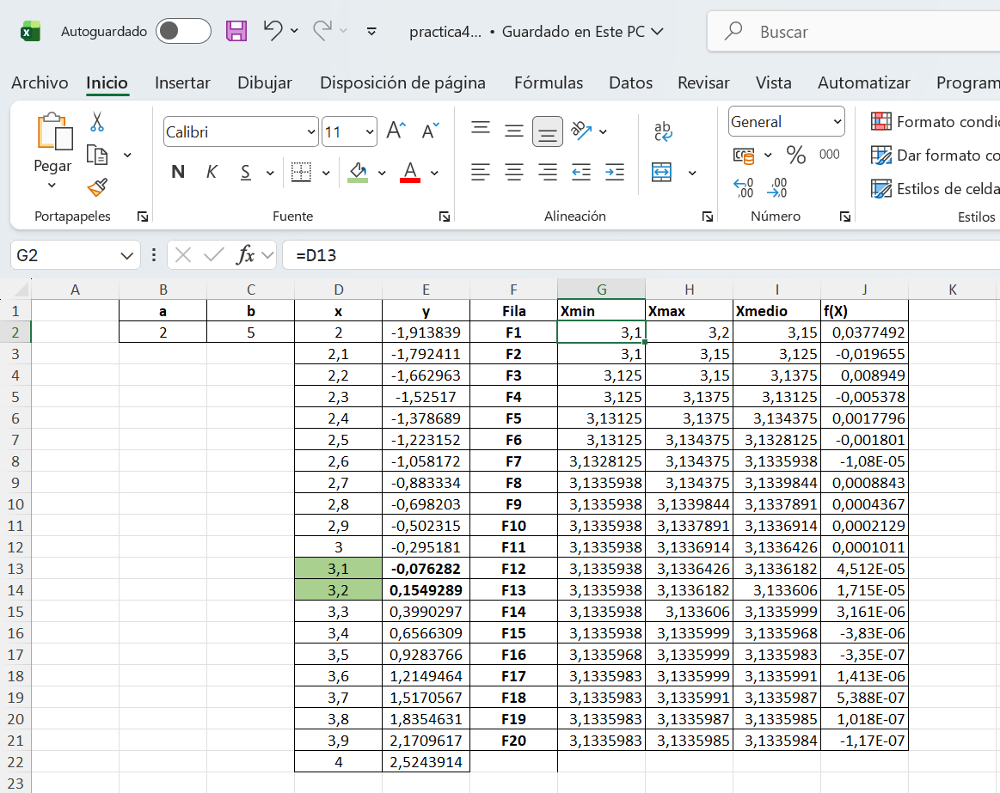
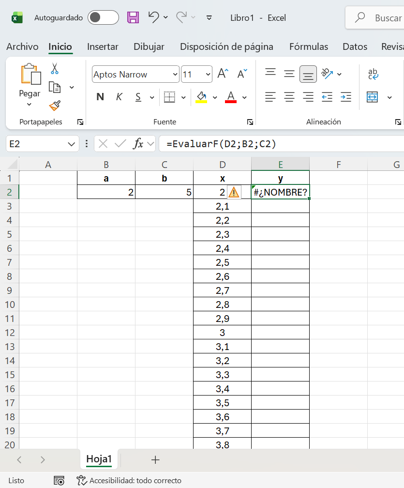
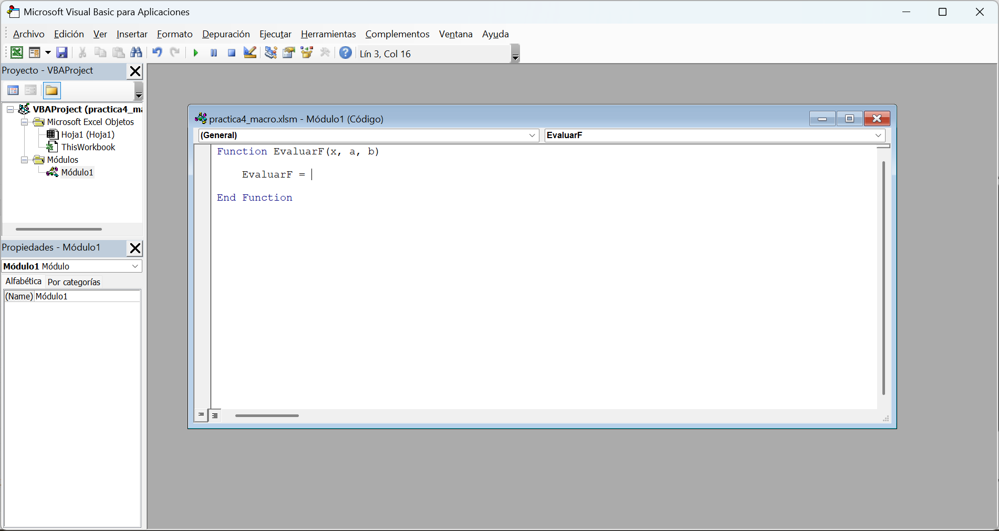

viewof params = {
const cleanSlider = (range, config) => {
const input = Inputs.range(range, config);
const numberBox = input.querySelector("input[type=number]");
if (numberBox) numberBox.style.display = "none";
const rangeSlider = input.querySelector("input[type=range]");
if (rangeSlider) rangeSlider.style.width = "100%";
input.style.width = "100%";
return input;
};
const ia = cleanSlider([0.1, 5], { value: 1, step: 0.1 });
const ib = cleanSlider([0, 6], { value: 2, step: 0.1 });
const col = (input, label) => {
const val = htl.html`<div style="font-family: monospace; color: #555; margin-top: 4px;">
${input.value.toFixed(1)}
</div>`;
input.addEventListener("input", () =>
val.textContent = input.value.toFixed(1)
);
return htl.html`
<div style="display: flex; flex-direction: column; margin-bottom: 20px;">
<div style="font-weight: bold; font-size: 0.9rem; margin-bottom: 5px;">
${label}
</div>
${input}
${val}
</div>`;
};
const form = htl.html`
<div style="width: 100%;">
${col(ia, "Constante a")}
${col(ib, "Nivel b")}
</div>`;
form.oninput = () => form.value = { a: ia.value, b: ib.value };
form.value = { a: ia.value, b: ib.value };
return form;
}Práctica 4: Aspectos avanzados de Excel
Objetivos de la práctica
Los objetivos de esta práctica son los siguientes:
- Mostrar algunas de las capacidades más interesantes de una hoja de cálculo como herramienta para la resolución de problemas. No se pretende impartir un curso de Excel, sino despertar el interés por herramientas de enorme utilidad.
- Aplicar algunos de los conocimientos de programación aprendidos en esta asignatura.
Introducción
Una hoja de cálculo es una herramienta de gran utilidad en la resolución de problemas en ingeniería dado que, además de permitir manejar una gran cantidad de datos y realizar operaciones complejas de forma interactiva, proporciona una potente herramienta de representación gráfica de datos, fácil de utilizar. De hecho, hay una gran cantidad de problemas que pueden ser resueltos y analizados con una simple hoja de cálculo, de una manera rápida y eficaz, sin tener que recurrir al desarrollo de aplicaciones específicas o al uso de otras aplicaciones de cálculo comerciales más potentes, pero más costosas y complejas de utilizar.
Nos centraremos en los siguientes puntos, aunque para profundizar en ellos se recomienda consultar la documentación oficial de Excel y la bibliografía recomendada:
- Representación de datos simples.
- Cálculo mediante fórmulas complejas.
- Funciones de Excel.
- Estructuras condicionales.
- Repetición para crear tablas de datos.
- Referencias absolutas y relativas.
- Creación de gráficos.
- Creación de macros.
Ecuaciones no lineales y métodos iterativos
Hay muchos problemas matemáticos donde no se conoce un método analítico para calcular una solución exacta o bien el método para obtener la solución es tan costoso que no resulta una opción válida para obtener un resultado con un tiempo de respuesta bajo. En dichos casos, una alternativa es utilizar un método numérico que aproxime la solución.
Como caso de estudio consideraremos la curva catenaria. Desde el punto de vista físico, una catenaria describe la forma que adopta un cable suspendido por sus extremos y sometido exclusivamente a la acción de su propio peso. La catenaria invertida, obtenida al reflejar la curva respecto de un eje horizontal, presenta una propiedad estructural especialmente relevante en arquitectura: bajo cargas gravitatorias uniformes, el esfuerzo interno es predominantemente de compresión, lo que la convierte en una forma óptima para el diseño de arcos y bóvedas.

Un ejemplo de su aplicación es la obra del arquitecto Antonio Gaudí, quien empleó modelos físicos de catenarias invertidas para el diseño de la Sagrada Familia en Barcelona, tal como se ilustra en la Figura 1.
Podéis utilizar la web WikiArchitect para explorar información sobre edificios, arquitectos y obras de distintos lugares del mundo. Su principal ventaja es que permite buscar proyectos mediante distintos criterios, como el país, el tipo de edificio o el nombre de una obra concreta. En el contexto de esta práctica, puede ser especialmente útil para localizar ejemplos arquitectónicos en los que aparezcan arcos, bóvedas, cubiertas colgantes o formas relacionadas con la curva catenaria, y así relacionar el modelo matemático que vamos a trabajar en clase con aplicaciones reales en arquitectura.
También podéis encontrar más información sobre las curvas catenarias en el siguiente vídeo:
Curva catenaria
La curva que describe un cable suspendido de dos puntos a la misma altura y cuyo punto mínimo es el punto \((0,a)\) se puede escribir como:
\[ y = a \cosh\left(\frac{x}{a}\right) = a \frac{e^{x/a} + e^{-x/a}}{2} \]
donde \(a > 0\) es un parámetro real que controla la forma de la curva y la tensión del cable. Valores mayores de \(a\) producen una curva más ancha y menos tensa, mientras que valores menores de \(a\) producen una curva más estrecha y más tensa.
En esta práctica vamos a resolver la ecuación \(y = b\), para un número real \(b\). Para ello, consideraremos la función:
\[ f(x) = a \cosh\left(\frac{x}{a}\right) - b \]
y buscaremos las soluciones de la ecuación \(f(x) = 0\).
Podéis interactuar con la curva catenaria a continuación, modificando el valor de la constante \(a\) para ver cómo afecta a la forma de la curva. También podéis modificar el valor de \(b\) para ver cómo afecta a la posición de la línea horizontal y a las soluciones de la ecuación \(f(x) = 0\). El punto mínimo de la curva se denomina vértice y aparece marcado como un punto naranja. Las soluciones de la ecuación \(f(x) = 0\) aparecen marcadas como puntos rojos.
{
const curve = Array.from({ length: 401 }, (_, i) => {
const x = -10 + i * 0.05;
const y = Math.min(20, a * Math.cosh(x / a));
return { x, y };
});
const points = [];
if (a !== 0) {
points.push({
x: 0,
y: a,
label: `V=(0, ${a.toFixed(2)})`
});
}
const yline = [{ x: -4, y: b }, { x: 4, y: b }];
const intersections = [];
if (b >= a) {
const xsol = a * Math.acosh(b / a);
intersections.push({ x: xsol, y: b });
if (xsol !== 0) {
intersections.push({ x: -xsol, y: b });
}
}
const curve_plot = Plot.plot({
height: 300,
grid: true,
marginLeft: 40,
x: { domain: [-4, 4], label: "x axis" },
y: { domain: [0, 6], label: "y axis" },
marks: [
Plot.ruleY([0], { stroke: "#888" }),
Plot.ruleX([0], { stroke: "#888" }),
Plot.line(curve, { x: "x", y: "y", stroke: "steelblue", strokeWidth: 3 }),
Plot.dot(points, { x: "x", y: "y", fill: "#f49e61", r: 6 }),
Plot.text(points, { x: "x", y: "y", text: "label", dy: -15 }),
Plot.line(yline, { x: "x", y: "y", stroke: "red", strokeDasharray: "4 4" }),
Plot.dot(intersections, { x: "x", y: "y", fill: "red", r: 5 })
]
});
curve_plot.style.width = "100%";
return curve_plot;
}Representación gráfica de la solución
Los pasos a seguir para representar gráficamente la función \(f\) y obtener una aproximación de la solución a la ecuación \(f(x) = 0\) son los siguientes:
Abrir Excel y crear un
Libro en blanco.En las celdas
B2,C2escribiremos los valores de \(a\) y \(b\). Por ejemplo, \(a = 2\) y \(b = 5\). Asimismo, podemos utilizar las columnasB1yC1para añadir texto que permita explicar el significado de las celdas de abajo, escribiendo a y b. Fijaros en la Figura 2 para ver un ejemplo de cómo debería quedar la hoja de cálculo en este punto.Buscaremos un intervalo de valores entre los que sepamos que se encuentra la solución, de manera que en ambos extremos del intervalo la función cambie de signo. Como la función \(f\) es continua, esto implica que entre dicho valor existe un valor intermedio donde la función toma el valor \(0\). Por ejemplo, la gráfica de la derecha muestra que el valor de \(x\) donde \(f(x) = 5\) está en \([2, 4]\), y además \(f(2) < 0\) y \(f(4) > 0\). Por tanto, los valores de \(x\) irán en el rango \([2, 4]\), con un incremento de \(0,1\) entre cada valor.
{
const a = 2;
const b = 5;
const curve = Array.from({ length: 401 }, (_, i) => {
const x = -6 + i * 0.03;
const y = Math.min(20, a * Math.cosh(x / a));
return { x, y };
});
// Horizontal line y = b
const yline = [{ x: -6, y: b }, { x: 6, y: b }];
// Intersections
const intersections = [];
if (b >= a) {
const xsol = a * Math.acosh(b / a);
intersections.push({ x: xsol, y: b });
if (xsol !== 0) {
intersections.push({ x: -xsol, y: b });
}
}
return Plot.plot({
height: 450,
grid: true,
marginLeft: 40,
x: { domain: [-6, 6] },
y: { domain: [0, 8] },
style: { fontSize: "1.4em" },
marks: [
Plot.rect(
[{ x1: 2, x2: 4, y1: 0, y2: 8 }],
{
x1: "x1",
x2: "x2",
y1: "y1",
y2: "y2",
fill: "orange",
fillOpacity: 0.15
}
),
Plot.ruleY([0], { stroke: "#888" }),
Plot.ruleX([0], { stroke: "#888" }),
Plot.line(curve, { x: "x", y: "y", stroke: "steelblue", strokeWidth: 3 }),
Plot.line(yline, { x: "x", y: "y", stroke: "red", strokeDasharray: "4 4" }),
Plot.dot(intersections, { x: "x", y: "y", fill: "red", r: 5 })
]
});
}A continuación, en los pasos 5, 6 y 7, crearemos una tabla con los valores de \(f(x)\) en función de \(x\), en las celdas
D2-E22. No basta con crear la tabla, es obligatorio utilizar correctamente referencias absolutas y relativas.Para rellenar los valores de \(x\), se introduce el primer valor, \(2\), en la celda
D2. Después, marcamos las celdas a rellenar,D2-D22y utilizamos la opciónInicio > Rellenar > Series(sección deEdición), indicando el incremento de valor deseado (en este caso, 0,1). Igual que antes, podemos indicar enD1yE1el significado de cada columna, escribiendo x y y, respectivamente.Introduce en la celda
E2la fórmula para calcular \(f(x)\) a partir del valor de \(x\) en la celda ‘D2’. Excel incluye la función COSH para calcular un coseno hiperbólico.Copia el valor de la celda
E2en las celdasE3-E22.
Error de actualización
Excel ajusta automáticamente la fórmula, pero el resultado no es correcto; \(x\) se ha actualizado correctamente, pero las referencias a los valores de \(a\) y \(b\) también.
Para solucionar el problema anterior, modificaremos la fórmula en
E2combinando el uso de referencias absolutas (que se mantendrán constantes al copiar la celda) y relativas (que se actualizarán al ser copiadas). Para crear referencias absolutas, de modo que no cambien automáticamente al copiarse la celda, se añade un carácter$entre la letra y el número (por ejemplo,$B$2). También podéis usar el atajo de teclado conF4oFn+F4. Haz los cambios correspondientes para utilizar referencias absolutas para los valores de \(a\) y \(b\) (celdasB2yC2) y referencias relativas para el valor de \(x\) (celdaD2).Ahora sí, propagad el valor de la celda
E2a las celdasE3-E22.
- Seleccionamos
D2-E22e insertamos un gráfico de tipo XY Dispersión (abrid el menú de gráficos, pinchando en la esquina inferior derecha). Haciendo click en cada eje podemos cambiar el rango de valores mostrado, como muestra la Figura 2:

Figura 2: Actualización de ejes en el gráfico.
- Podemos observar en la Figura 3 que el valor cero de \(f(x)\) se alcanza en [3.1, 3.2]. Si se repite el proceso con valores de \(x\) en el intervalo \([2, 4]\) e incremento 0.01, el resultado será más preciso.

Figura 3: Gráfico de tipo XY Dispersión.
- Guarda el fichero de Excel con extensión
.xlsx, por ejemplo,practica4.xlsx.
Automatización mediante el método de bisección
En lugar de repetir el proceso a mano, vamos a automatizarlo. Comenzaremos con un intervalo e iremos reduciéndolo por el método de bisección hasta obtener una solución que nos parezca suficientemente buena.
En las celdas
G1-J1escribiremos los nombres Xmin (valor mínimo del intervalo), Xmax (valor máximo), Xmedio (valor del punto medio) y f(x) (valor de la función \(f\) en el punto Xmedio).En las celdas
G2yH2escribiremos los extremos del intervalo inicial, tales que \(f(G2)\) y \(f(H2)\) tengan distinto signo: \(f(3.1) < 0\) y \(f(3.2) > 0\). Es decir, enG2escribimos 3,1 y enH23,2.En la celda
I2escribimos la fórmula para calcular el punto medio del intervalo, es decir, la media deG2yH2.
En la celda
J2calculamos el resultado de evaluar la función \(f\) en el punto indicado en la celdaI2. El valor deaybse mantiene para evaluar \(f\).En la fila 3 (celdas
G3yH3) definimos un nuevo extremo para el intervalo. Si f(xMedio) es negativo, seleccionamos el intervalo [xMedio, xMax] en la siguiente iteración. Si es positivo, utilizamos [xMin, xMedio]. Usa la funcion=SIpara resolver esta composición condicional.Copia las celdas
I2yJ2enI3yJ3, respectivamente.
- Copia la fila 3 en la fila 4 y repite este proceso hasta que se obtenga una solución suficientemente buena. Con 20 filas debería ser suficiente para obtener una aproximación de la solución con un error menor a \(10^{-6}\).

Figura 4: Resultados obtenidos al aplicar el método de bisección. A la derecha, en \(f(x)\), se puede observar que no se ha alcanzado el valor cero, pero el error es inferior a \(10^{-6}\).
- Guarda los cambios en el fichero
practica4.xlsx.
Creación de una macro
Por último, vamos a crear una macro que permita calcular nuestra función \(f\). Una macro no es más que una función que nos permitirá escribir una fórmula para evaluar la función en un punto dado por la celda E2 (función EvaluarF), suponiendo que B2 contiene el valor de \(a\) y que C2 contiene el valor de \(b\) y D2 el valor de \(x\). Es decir, nuestra función recibirá 3 parámetros de entrada: los valores de \(x\), \(a\) y \(b\) (fíjate en la Figura 5).
- Crea un nuevo libro de Excel y en la celda
E2escribe la fórmula=EvaluarF(D2, B2, C2).

EvaluarF.
Error de función no definida
Por ahora, Excel no encuentra la función llamada EvaluarF. En su lugar, intenta utilizar la función SUMA y especifica un rango de celdas. Las funciones deben comenzar con el carácter =.

EvaluarF no está definida.
- Creamos la función
EvaluarF. Para ello, utilizamos la opción del menúArchivo > Opciones > Personalizar cinta de opcionesy activamos Desarrollador o Programador (ver Figura 7).

Figura 7: Activación de las opciones de Programador.
- En la opción del menú
Desarrollador > Visual Basicaparecerá una nueva ventana. Después de utilizar la opciónInsertar > módulo, copia y pega el código siguiente (ver Figura 8).
Los puntos suspensivos ... indican el código que debéis completar en la función, teniendo en cuenta que en Visual Basic hay una función exponencial Exp(x), pero no una función COSH para calcular el coseno hiperbólico, por lo que tendréis que escribir la fórmula de la función \(f\) utilizando Exp para calcular el coseno hiperbólico.
Programación en Visual Basic
Al igual que en Java, nuestra función en Visual Basic debe utilizar operaciones como la suma (+), la resta (-), la multiplicación (*) y la división (/). Rercuerda además que los paréntesis se utilizan para indicar el orden de las operaciones. De nuevo, recuerda que la curva catenaria se define como \(f(x) = a \frac{e^{x/a} + e^{-x/a}}{2} - b\).

Figura 8: Ejemplo de definición de la función EvaluarF en Visual Basic.
Cierra la ventana de Visual Basic y guarda el fichero de Excel con extensión
.xlsm. Por ejemplo, guárdalo con el nombrepractica4_macro.xlsm.Una vez guardado el fichero de Excel, probaremos sobre
E2la macroEvaluarF. Haz lo mismo para las celdasE3-E22. Tened cuidado nuevamente con las referencias absolutas.
💡 Solución

Entrega de la solución
Sólo debe realizar la entrega un miembro del grupo. Sube a Moodle un fichero comprimido practica4.zip que contenga los siguientes archivos:
practica4.xlsxpractica4_macro.xlsx
Informatica (30717) - Estudios en Arquitectura (UNIZAR)